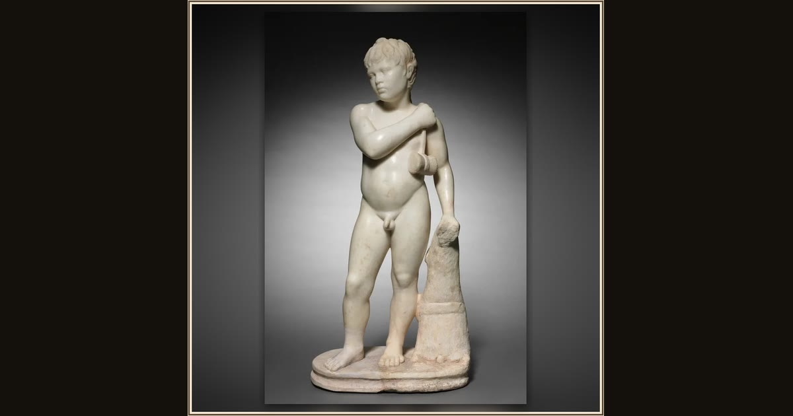

Youth with Jumping Weights
Italy, Rome · c. 40–70 CE · cma
A Roman marble youth holds jumping weights, recalling Socrates' first sight of Charmides as the young man enters the wrestling school (154b) Explore its place in Plato's Dialogues, Charmides, section 6.